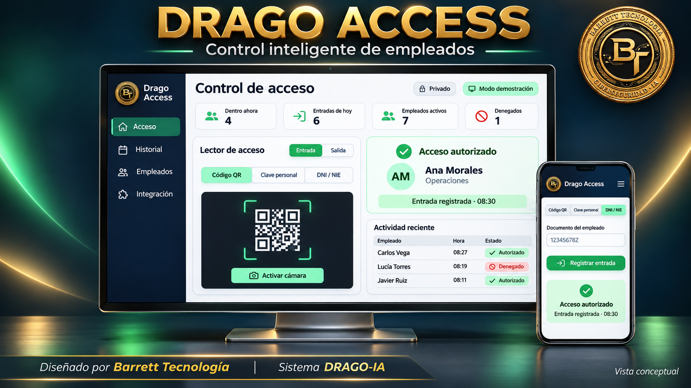

DEMOSTRACIÓN · INTEGRACIÓN REAL PREPARADA
Drago Access
Aplicación de control de acceso de empleados con identificación por QR, clave personal o DNI/NIE, registro de fecha y hora e historial consultable.
Interfaz adaptable a móvil, tablet y ordenador. Código separado en interfaz, lógica de identificación y validaciones, y adaptador preparado para conectar un servidor real. Funciona con datos de demostración cuando no hay servidor conectado.
Pruebas de funcionamiento ejecutadas con Node.js y npm, control de versiones con Git y documentación de configuración e integración.
Características del proyecto
- Lectura de QR mediante cámara.
- Identificación con clave personal o DNI/NIE.
- Registro de fecha y hora y estados de acceso.
- Gestión de empleados e historial consultable.
- Datos de demostración y adaptador para servidor real.
- Pruebas con Node.js y npm, Git y documentación de integración.